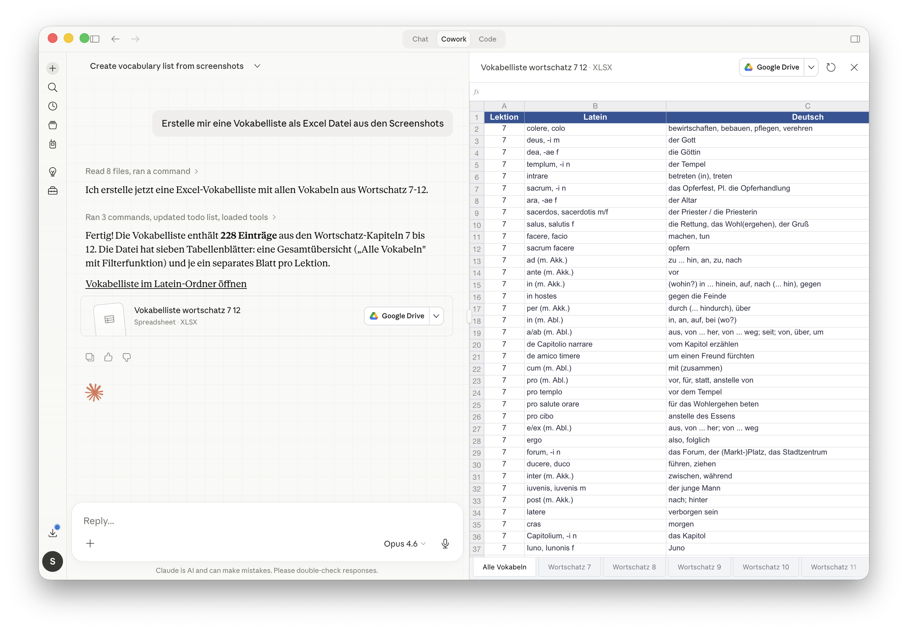
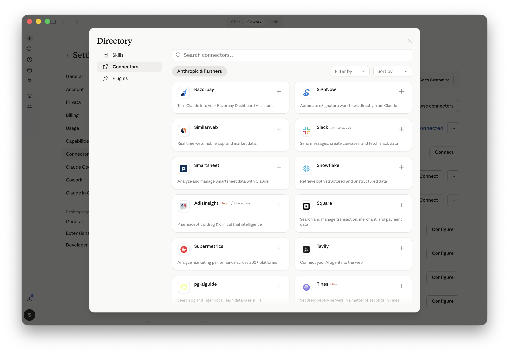
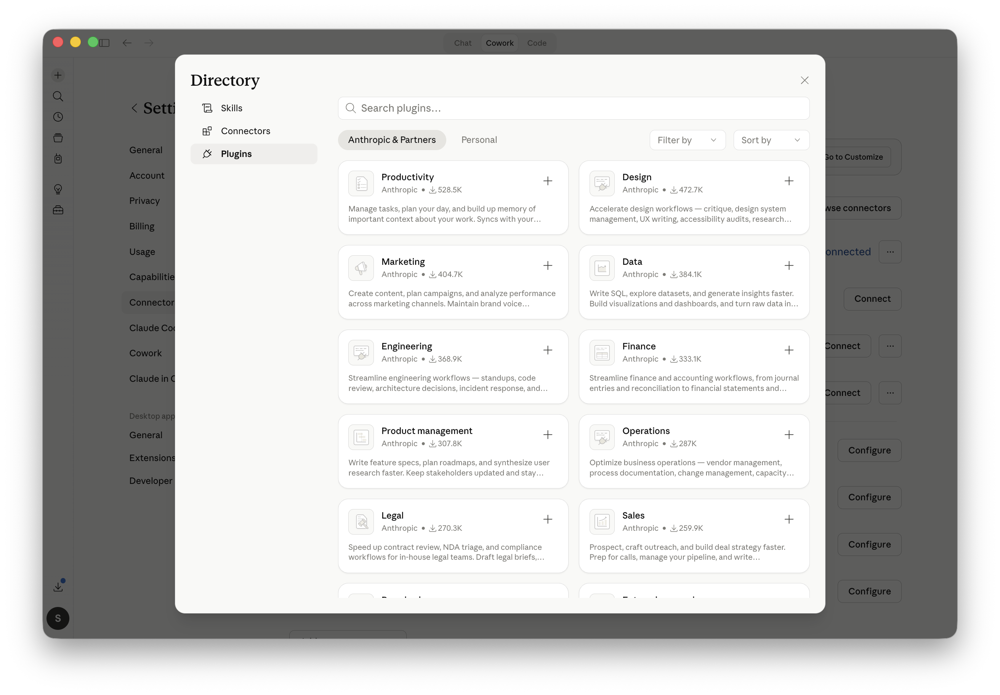
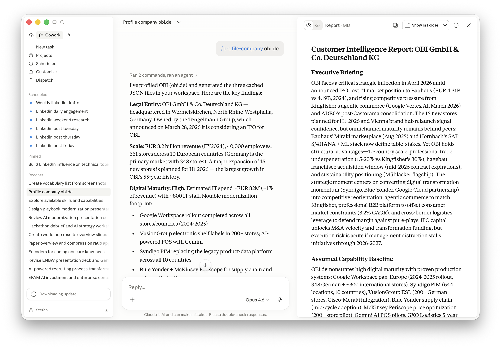
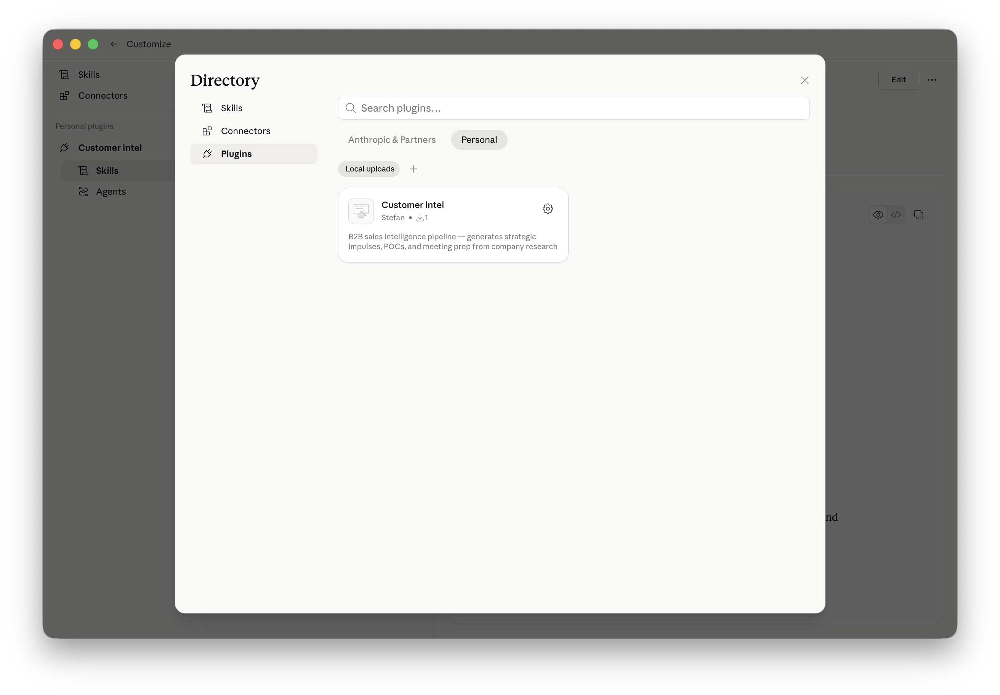
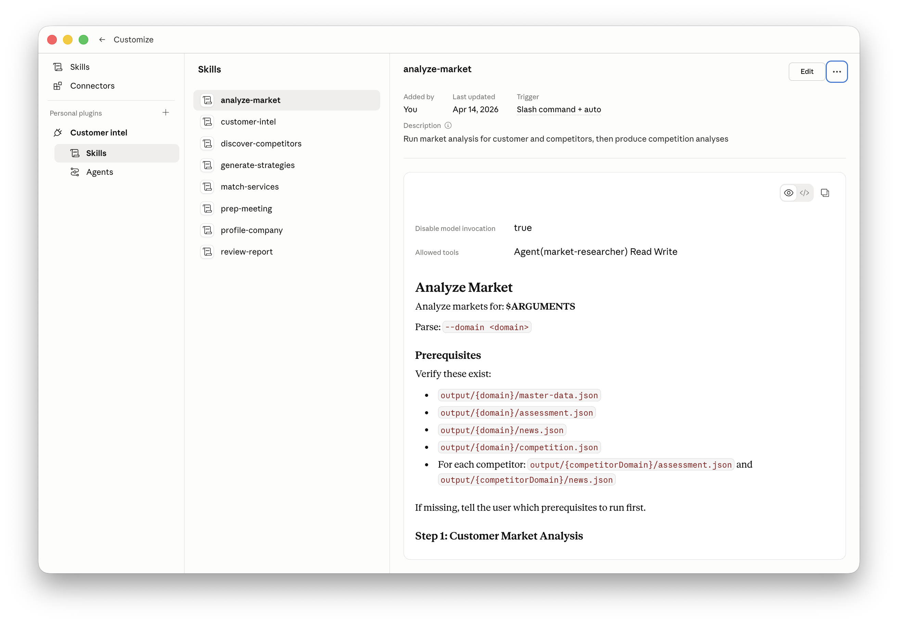
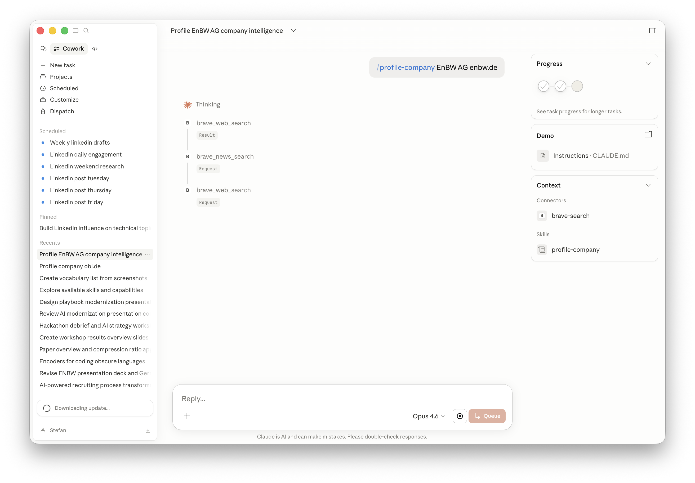
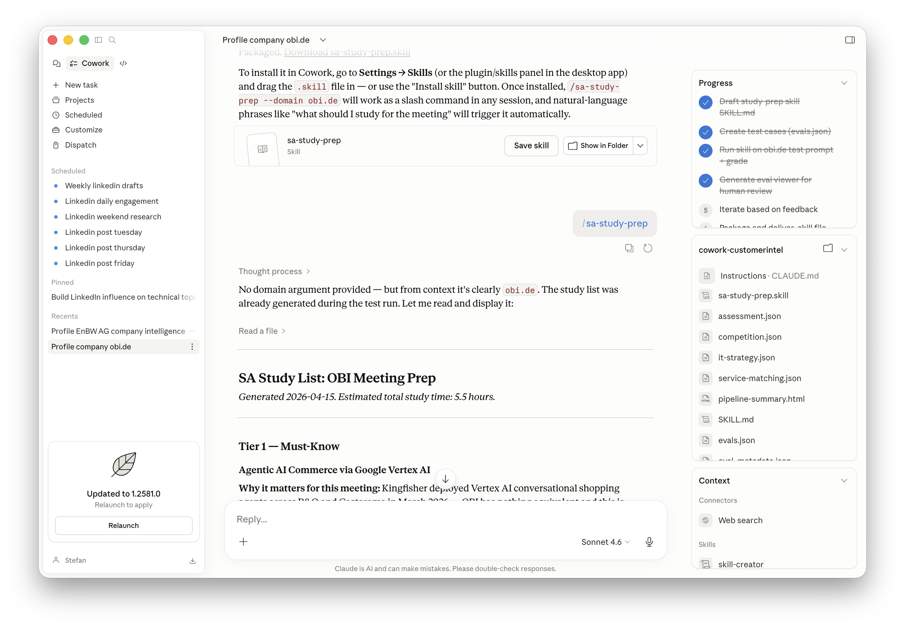

Showcasing customer intelligence and GenAI-powered workflow orchestration.
Stefan Siprell — Director, Solution Architecture / Technology Consulting
April 15, 2026
As a solution architect, I need to quickly help my sales colleague prepare for a customer meeting. I am not a vertical specialist, so I need to prepare for meetings in depth.
I shift-left GenAI and build a reusable plugin that my colleagues and I can use. I don’t become the AI gatekeeper, but the AI enabler.
Chat is a conversation. Cowork is a working session: you describe an outcome, Claude plans it, executes across your files and apps, and reports back when the work is done.
| Dimension | Chat | Cowork |
|---|---|---|
| Unit of work | A message | A deliverable |
| Context | Manually pasted | Read from files and apps |
| Output | Text to copy | Files updated in place |
| Duration | Seconds | Minutes to hours |
| Human role | Operator | Reviewer and approver |
| Integrations | None by default | MCP, Chrome, filesystem |
AI in modern life is not about personally generating one-off documents or artifacts. It’s about enabling colleagues to collaborate with tools and deliver repeatable capability.

Access the plugin and presentation files from Google Drive:
Start high-level: think knowledge + execution
A skill is reusable know-how: instructions that teach Claude how to do a specific kind of work
Benefit: reusable expertise without re-explaining the method each time
An agent is the worker that takes a goal, decides the steps, and executes them end to end
Benefit: delegated execution from goal to deliverable
MCP tools are the connections that let Claude act on external systems
Benefit: Claude can work with live systems instead of only the chat history
Folder instructions are persistent local rules Claude reads at the start of each session
Benefit: Claude starts with the right context instead of being re-briefed every time
Both extend Claude, but at different levels: connectors add managed access to systems, plugins package full solutions
Benefit: connectors provide access, plugins provide packaged capabilities
Where you find managed integrations to external systems and data sources

Typical entries: Google Drive, GitHub, Slack, Notion, Salesforce, Snowflake. Look here when Claude needs secure access to a live system.
Where you find packaged solutions that combine multiple Claude capabilities

Typical entries: role-based packs for sales, finance, engineering, legal, or support. Look here when you want a reusable workflow built from skills, agents, and tools.
We are building a First Meeting Generator

---
name: customer-intel
description: Run the full customer intelligence pipeline for a company. Generates strategic impulses, POCs, and meeting prep from company research.
disable-model-invocation: true
allowed-tools: Agent(company-profiler, market-researcher, tech-challenger, business-challenger) Read Write Bash WebSearch
---
# Customer Intelligence Pipeline
(...)
## Pipeline Stages
### Phase 1: Company Profiling
1. Check if `output/{domain}/master-data.json` exists (cache check — skip if present)
2. If not cached, spawn **company-profiler** agent for the customer domain and name
3. Verify `output/{domain}/master-data.json` and `output/{domain}/assessment.json` exist
Six phases from company domain to red-team-reviewed meeting pack
---
name: discover-competitors
description: Find 8-12 competitors for a company based on industry, market, and revenue scale
disable-model-invocation: true
allowed-tools: Agent(company-profiler) Read Write WebSearch
---
# Discover Competitors
Find competitors for: **$ARGUMENTS**
Parse: `--domain domain`
## Prerequisites
Read `output/{domain}/master-data.json` and `output/{domain}/assessment.json`. If they don't exist, tell the user to run `/profile-company` first.
## Competition Discovery
Use web search to find competing companies. Definition of "competitor" (must satisfy ALL):
1. Operates in the same industry segments
2. Competes in the same geographic markets
3. Has comparable scale: revenue within ~0.5x to 2x of the customer
4. Must be an independent company or clearly identified business unit
Process:
1. Identify the customer's core segments, product lines, and main end-markets (use official sources first)
2. Identify revenue (most recent year); if private, use multiple estimates and show range
3. Search for competitors in those segments and markets. Prefer annual reports, investor decks, reputable industry publications, market reports. Avoid low-quality listicles.
4. Filter to 8-12 best matches
5. Provide evidence for each: 2-3 citations showing overlap in products/markets and approximate revenue
Important rules:
- Always include evidence of direct overlap (specific product lines or business segments)
- Avoid "same broad industry" matches — overlap must be specific
- If revenue is missing, provide estimate band with sources and lower confidence
Write `output/{domain}/competition.json`:
```json
{
"customerLegalName": "...",
"customerDomain": "...",
"competition": [
{ "competitionLegalName": "...", "competitionDomain": "..." }
]
}
Profile Competitors
After writing competition.json, spawn company-profiler agents for each competitor — launch in PARALLEL where possible. Each profiles the competitor under output/{competitorDomain}/.
Let's look at the skill and its execution in Claude Cowork




Questions, ideas, or follow-up thoughts?
Thanks for joining NAICE2026 — let’s keep the conversation going.